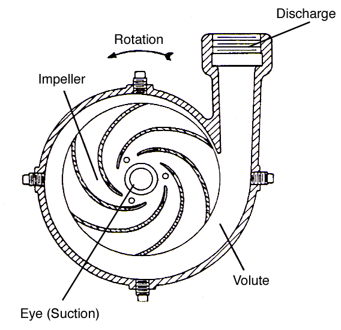
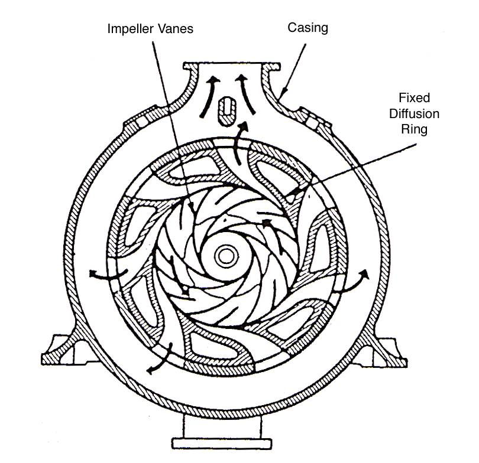
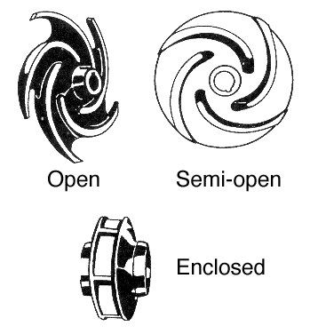
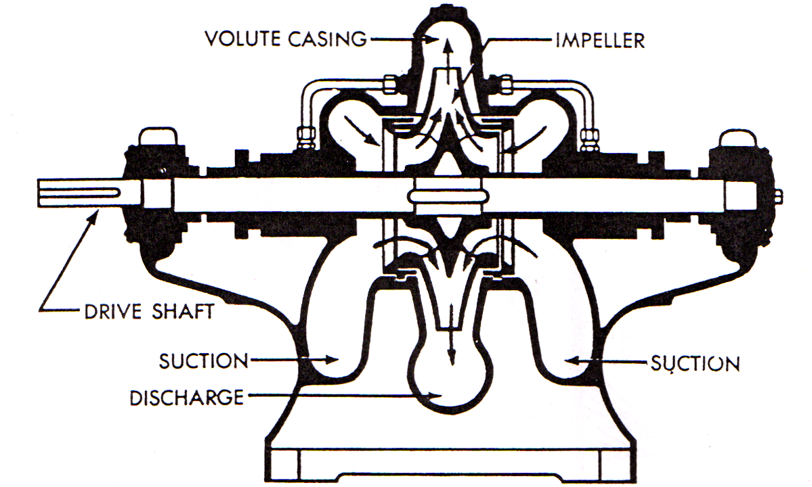

Subsubsection 5.3.3.1 Centrifugal Pumps
Centrifugal pumps use centrifugal force to transfer the mechanical energy supplied to the pump into primarily kinetic energy (velocity) in the fluid being pumped. Centrifugal force is the force generated by rotation which acts outward from the center of rotation. Using the terminology already covered, centrifugal pumps are classified as: non-positive displacement pumps, non-self priming, and are constant delivery for a given operating speed and discharge pressure. Because of their simplicity, low cost and ability to operate under a wide variety of conditions, centrifugal pumps are widely used. They can be adapted to produce any head up to several thousand feet and will handle liquids at temperatures up to 1000° F. They can also be designed to handle liquids containing a high proportion of rather large solid particles.

A centrifugal pump consists of a rotating element called the impeller, which is the only moving part in the pump, and a specially shaped housing, or pump casing. In practically all centrifugal pumps, liquid enters the rotating element at the center through the eye, and is given a rotary motion in the pump chamber by the rotation of a number of impeller blades (generally called vanes). The rotation of the impeller in a true centrifugal pump does two things. Centrifugal force drives the liquid directly out from the center of the impeller, setting up a greater pressure in the chamber at the outer edge of the impeller than at the eye. At the same time the liquid is also pushed around and around by the turning of the vanes, and is given more and more velocity as it moves farther out from the eye. The liquid finally leaves the impeller tangentially at the end of the vanes with a high velocity, and flows into the discharge passage of the pump housing surrounding the impeller.
The discharge passage gradually widens as it leads the liquid away from the impeller to the discharge nozzle on the pump housing. The gradual widening of the discharge passage reduces the velocity of the liquid. Since the reduction in velocity does not produce work, it results in a change in the type of energy contained in the liquid. Most of the velocity (kinetic energy) in the liquid produced by the centrifugal pump is transformed into pressure (potential energy) by the widening discharge passage. This type of energy is more available for doing work. On most centrifugal pumps this widening passage is built into the pump casing that surrounds the impeller and is called the volute. Additional conversion of velocity to pressure may be accomplished in the discharge nozzle and sometimes in the piping leading away from the pump.
Recall that a reduction in the velocity of a liquid (without producing any work) changes the type of energy contained in the liquid into increased pressure. The reverse is also true. If the pressure in a liquid is reduced (without producing any work) then the velocity of the liquid must increase.)
When liquid is forced away from the eye by centrifugal force, a reduced pressure area is created in the eye causing more liquid to flow in. This creates a constant flow through the impeller and out through the discharge of the centrifugal pump.
In a centrifugal pump, the velocity that can be imparted to the liquid, and the resulting discharge pressure depends upon both the impeller diameter and the impeller RPM. Increasing either results in:
- higher centrifugal force
- higher liquid velocity
- higher pressure
The centrifugal pump, with a certain size impeller operating at a set speed, will only put enough energy in the liquid to create a specific discharge pressure. If the resistance in the discharge piping rises to the maximum pressure the pump can create, liquid flow through the pump stops. The centrifugal pump is said to be operating at its shut-off head and no liquid is delivered by the pump. Friction between the rotating impeller and the liquid trapped in the pump casing increases the liquid temperature, possibly causing it to vaporize. To prevent vaporization of the liquid in a high speed centrifugal pump handling very hot liquids, a small pipeline is installed on the discharge side of the pump to divert a small amount of liquid back to the supply tank on the suction side of the pump. This small quantity of liquid flowing through the pump acts as a cooling system constantly removing the heated liquid from the pump casing and replacing it with cooler liquid from the supply tank. These lines are called recirculating lines and are always found on shipboard turbine-driven centrifugal feed pumps because they are frequently subjected to shut-off head when the ship’s main engine is stopped or maneuvering.
Impeller vanes which curve backwards with respect to their direction of rotation are more efficient and give better performance than straight vanes; however, the pump must be turned in the correct direction to obtain this efficiency. The advantage of straight vane impellers is that they have the same efficiency in either direction of pump rotation. In Figure 5.3.2, the impeller rotation is counter-clockwise allowing the liquid to be pushed around the pump chamber by the vanes, rather than being carried by them. If a curved vane impeller was operated in the wrong direction rotation, it would still deliver some liquid, but the following would be observed:
- The pump would require more power to turn the impellor backwards.
- The pump discharge capacity would decrease.
- The pump efficiency would decrease.
Centrifugal Pump Design.
Centrifugal pumps come in two basic designs, volute and diffuser, and many variations, including: single- or double-suction, single or multiple stages, and horizontal or vertical layout.
In the volute pump, the one most commonly used, the impeller discharges into a progressively expanding casing, as shown in Figure 5.3.2. The casing is proportioned to produce equal velocity of flow all around the circumference of the casing and then gradually to reduce the velocity as the liquid passes from the casing into the nozzle to be discharged from the pump, thereby transforming a considerable part of the velocity head into pressure head.

In the diffuser pump, the impeller is surrounded by gradually expanding passages formed by stationary guide vanes, sometimes called a diffusion ring, as shown in Figure 5.3.3. In these expanding passages the direction of flow is changed and velocity largely converted to pressure before the liquid enters the volute. It is worth noting that the diffuser vanes are set approximately tangent to the ends of the impeller blades. In this kind of casing, efficiency may be slightly higher than in volute pumps, since velocity is more completely converted into pressure. The added cost of manufacture and more complicated construction of diffuser pumps, however, is generally not considered justified except occasionally in the case of large high pressure pumps.

The impellers used in volute and diffuser pumps are of three kinds, open, semi-open, and enclosed as shown in Figure 5.3.4. The open impeller consists only of blades attached to a hub. The semi-open impeller is constructed with a circular plate, called the web, on the inside edge of the blades. The web need not extend all the way out to the ends of the blades. The use of a web makes it possible to use thinner blades. In the case of the enclosed impeller, a shroud is added on the outside edge of the blades, so that the liquid is in large measure confined in the blade region, between the web and the shroud. Holding the liquid between these plates reduces friction losses in the pump. Open and semi-open impellers are normally found in pumps that must handle relatively large solids in the liquid, such as sewage pumps.
Impellers may also be single or double-suction. The former consists of a single impeller drawing liquid in from one side through one eye, while the double suction impeller is similar to a pair of single suction impellers placed back to back, placing an eye on each side of the impeller so that the liquid is drawn into the impeller from opposite directions. Double suction impellers can handle greater capacities of liquid than a single suction impeller of the same size and operating speed. This is because the larger inlet area of the two suction eyes provides less resistance to liquid flow into the impeller.

Single stage pumps contain only one impeller, drawing in the liquid and expelling it through the discharge into the liquid system. A double-suction, single-stage pump is shown in Figure 5.3.5. A disadvantage of the single-stage pump, however, is that discharge pressure cannot be increased above the maximum working pressure of the impeller design operating at a given speed. Above this limit, under practical working conditions, the pump will not deliver any further increase in pressure. Most volute type, single stage pumps do not operate at speeds in excess of 3600 RPM and typically produce maximum discharge pressures in the 150 to 200 psi range. Diffuser type, single stage pumps may operate at speeds as high as 8000 RPM and produce discharge pressures in excess of 1000 psi; turbine driven boiler feed pumps are sometimes this type.
In multistage pumps, this disadvantage is overcome by combining several single-stage pumps, whether single or double suction, so that the discharge of one impeller is delivered to the suction of the next impeller. The liquid is delivered to each succeeding stage under the pressure imparted to it by the preceding stage, and additional velocity and pressure are added. As the liquid passes through each impeller in turn, additional pressure is imparted to it. A much higher working head can be produced than is possible with a single impeller. For the sake of compactness the several impellers of multistage pumps are almost invariably placed on one shaft, and the whole unit is built into one housing. The impellers are arranged in multistage pumps to eliminate or minimize end thrust.
Both volute and diffuser pumps will be found in single and multi-stage construction. Because of the greater cost and complexity of diffuser pumps, they are rarely used.
The pump itself can have a vertical or horizontal layout, determined by the direction of the pump shaft axis when the pump is installed. Horizontal designs, in most applications, are easier for maintenance personnel to work on, while vertical designs require less floor space for installation. Both designs work equally well.
Centrifugal Pump Principles.
The discharge capacity, discharge pressure and horsepower required to drive the pump varies as shown below with changes in impeller speed \(n\) or impeller diameter \(d\text{.}\)
The discharge capacity Q varies DIRECTLY as the impeller speed \(n\) or impeller diameter \(d\text{.}\)
\begin{equation*}
\left(\frac{Q_2}{Q_1}\right) =\left(\frac{n_2}{n_1}\right)=\left(\frac{d_2}{d_1}\right)
\end{equation*}
The discharge pressure \(p\) from the AS THE SQUARE of the impeller rpm or diameter.
\begin{equation*}
\left(\frac{p_2}{p_1}\right) =\left(\frac{n_2}{n_1}\right)^2=\left(\frac{d_2}{d_1}\right)^2
\end{equation*}
The horsepower necessary to drive the pump varies AS THE CUBE of the impeller rpm or diameter.
\begin{equation*}
\left(\frac{HP_2}{HP_1}\right) =\left(\frac{n_2}{n_1}\right)^3=\left(\frac{d_2}{d_1}\right)^3
\end{equation*}
Operations.
The following steps describe the procedure for safely starting a centrifugal pump.
- Rotate the pump by hand to insure it is free to turn.
- If the pump has a packed shaft and is to operate with a high vacuum on the suction side, open the seal water line to the stuffing box (if fitted with a valve), and the suction vent line to remove vapors from the suction casing. On a high speed boiler feed pump, open the recirculating line.
- Open the suction valve and close the discharge valve.
- Prime or flood the pump casing with liquid.
- Start the pump prime mover.
- As the pump comes up to running speed, briefly open the casing vent valve (if installed) to expel any air from the casing.
- When the pump is up to its normal running speed, open the discharge valve.
- Check the suction and discharge pressure gages to insure the pump is operating normally and make sure a packed pump shaft has a small amount of liquid leakage.
- After the pump has run for a little while, check the casing, stuffing box area (on a packed pump), and the bearing housings for excessive temperatures.